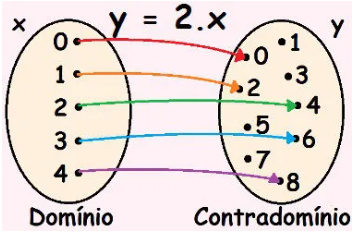

Funções
Função é uma regra que relaciona cada elemento de um conjunto (representado pela variável x) a um único elemento de outro conjunto (representado pela variável y). Para cada valor de x, podemos determinar um valor de y, dizemos então que “y está em função de x
Nessa representação há dois conjuntos numéricos, um domínio e um contradomínio. Dentro do contradomínio há um subconjunto chamado de imagem. Esse subconjunto é composto pelos elementos que estão recebendo a seta, isto é, aqueles que possuem alguma relação com os elementos do domínio. Ao trabalharmos com funções, sempre teremos uma “lei da função” que determinará como serão os elementos da imagem dessa função. Nesse caso, há uma função de y em relação a x, uma vez que, para cada x escolhido, há um y. Dizemos ainda que y é a variável dependente e, por sua vez, que x é a variável independente.